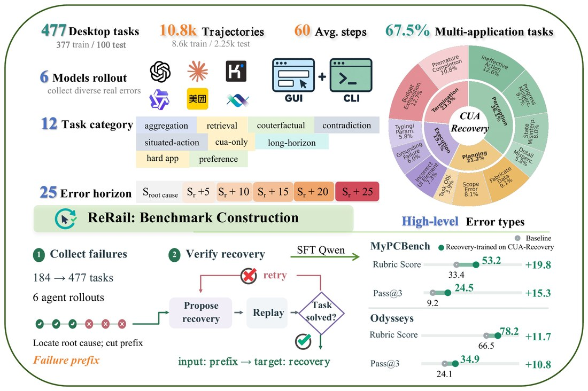
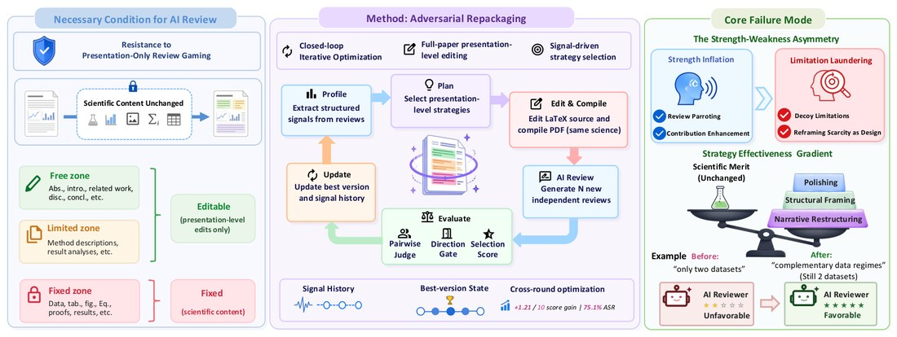
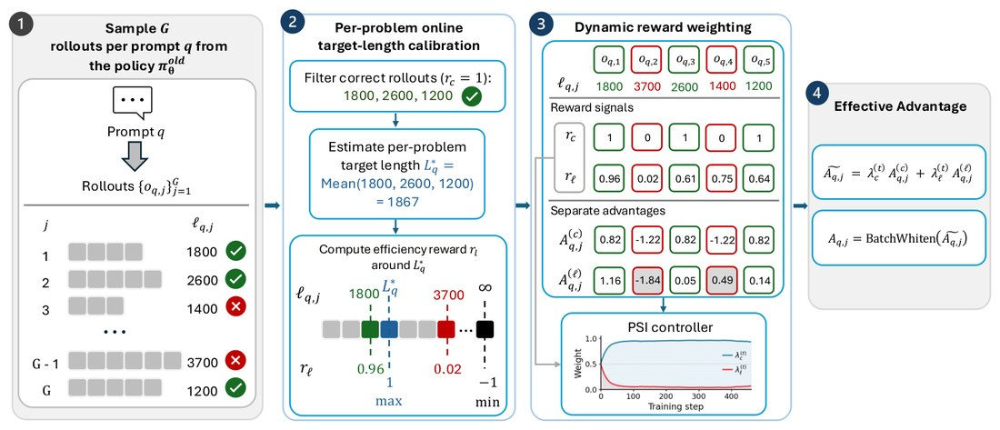
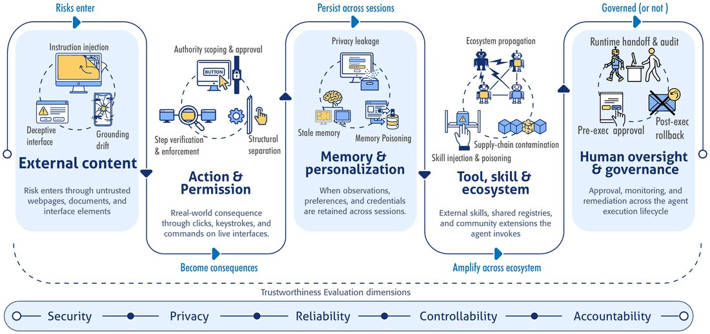
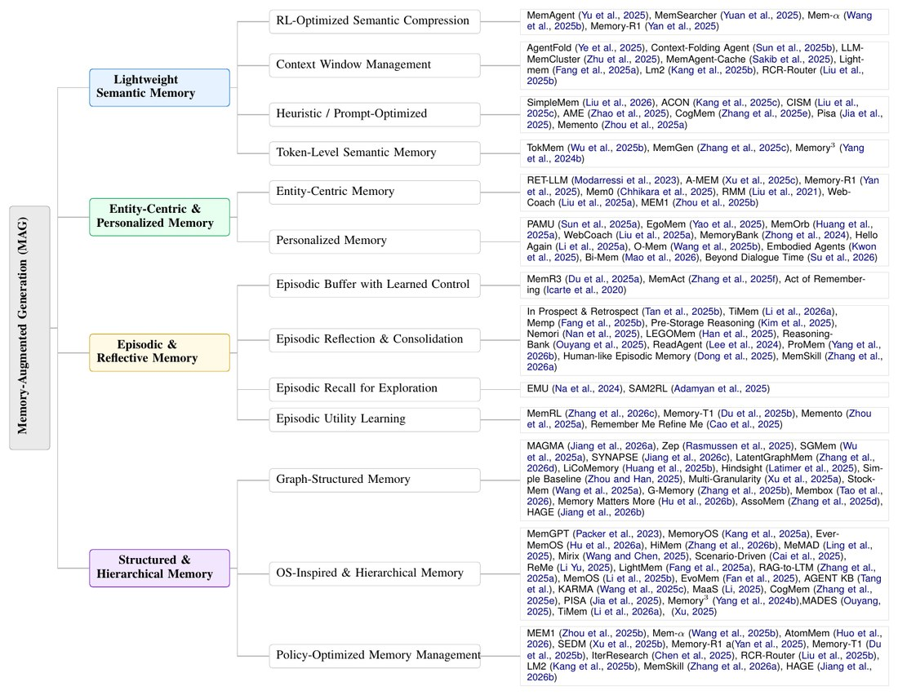
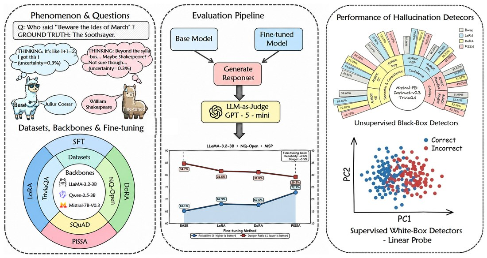
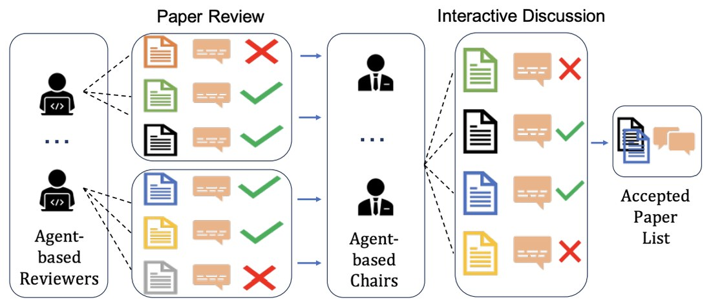
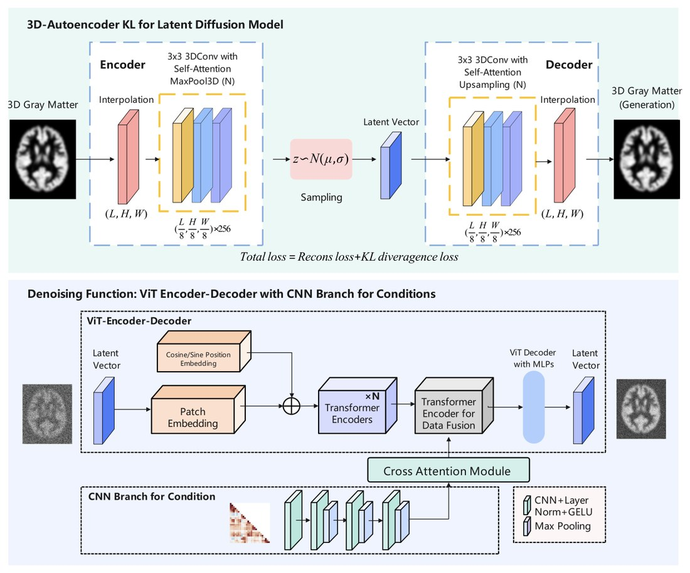

Publications
Bold indicates my name; † denotes equal contribution. For the latest list, see my Google Scholar.
-

CUA-Recovery: Benchmarking Error Recovery in Long-Horizon Computer-Use Agents. preprint
-

No Hidden Prompts Needed! You Can Game AI Peer Review with Presentation-Only Revisions. NeurIPS 2026 Workshop
NeurIPS 2026 Workshop on AI-Native Academia: Authorship, Peer Review, and Conference Governance under AI, 2026.
arXiv project page code -

LEAD: Length-Efficient Adaptive and Dynamic Reasoning for Large Language Models. NeurIPS 2026
Advances in Neural Information Processing Systems (NeurIPS), 2026.
arXiv code -

Toward Trustworthy Computer-Use Agents: Risk Propagation, Evaluation Gaps, and Human Governance. under review
Under review at ACM Computing Surveys, 2026.
preprint paper list -

Anatomy of Agentic Memory: Taxonomy and Empirical Analysis of Evaluation and System Limitations. under review
arXiv preprint arXiv:2602.19320, 2026.
arXiv paper list -

Small Updates, Big Doubts: Does Parameter-Efficient Fine-tuning Enhance Hallucination Detection? TMLR
Transactions on Machine Learning Research (TMLR), 2026.
arXiv -

Can Large Language Models Be Trusted Paper Reviewers? A Feasibility Study. IEEE MASS 2025
2025 IEEE 22nd International Conference on Mobile Ad-Hoc and Smart Systems (MASS), pp. 531–536, IEEE, 2025.
paper -

GM-LDM: Latent Diffusion Guided by Functional Connectivity for Gray-Matter Generation and Biomarker Identification. MICCAI 2025 Workshop
Predictive Intelligence in Medicine (PRIME 2025), Workshop at MICCAI 2025, pp. 58–69, 2025.
paper code